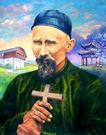
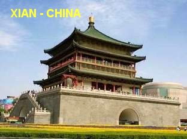

"VITÓRIA DO AMOR"
DEDICAÇÃO TOTAL

Em 1900, quando a
China viveu a
“rebelião dos Boxers”,
e os cristãos foram perseguidos por
seus integrantes, Padre José permaneceu firme ao lado do seu rebanho, rezando e
sofrendo com eles. Recusou viajar para a Holanda e participar das celebrações do
jubileu de prata da “SOCIEDADE
DO VERBO DIVINO” que, por
sinal, coincidia com o seu jubileu de prata, da ordenação sacerdotal.
E assim, o
trabalho já estava exigindo muito da sua constituição física, a qual, desde algum
tempo já estava necessitando de atenciosos cuidados. Todavia, ele continuou
trabalhando incansavelmente, sem procurar nenhum tipo de distração ou de
descanso, e por isso, o organismo do seu corpo cobrou da sua saúde o “pesado
tributo deste santo desprendimento”.
Em 1907, o
senhor Bispo teve que viajar mais uma vez à Europa. Padre José Freinademetz ficou
novamente encarregado da administração da Diocese. Durante este período ocorreu
uma séria epidemia de tifo. Padre Freinademetz, o bom guia da sua Comunidade Religiosa,
ajudou incansavelmente em tudo que estava ao seu alcance, inclusive visitando e levando
medicamentos para os locais infectados. E então aconteceu o inesperado, ele
próprio veio a contrair a doença. O senhor Bispo quando regressou da viagem,
insistiu com ele para se tratar e repousar, aconselhando-o como também fizeram
os outros religiosos, que insistiram e o conduziram a uma estadia em Nagasaki
no Japão, para um restabelecimento completo da sua saúde. Lá permaneceu em tratamento
numa Clinica Médica. Depois de pouco mais de um mês de tratamento, voltou a
China com a saúde um pouco melhor, mas não totalmente curado.
MORTE E
SEPULTAMENTO
Preocupado com sua
Comunidade Cristã, agradeceu a todos pelo carinho, e imediatamente seguiu para Taikia,
sede do seu Bispado. Continuou o seu trabalho missionário. Mas seu organismo não
resistiu mais. Perto das 18 horas morreu de tifo, no dia 28 de Janeiro de 1908, com
a idade de 56 anos. Padre Joseph Freinademetz foi enterrado no Cemitério de Taikia
defronte a décima segunda estação da Via Sacra. Sua sepultura rapidamente
tornou-se um local de visitas e de orações por todos os cristãos. Infelizmente o
seu túmulo não existe mais. Foi profanado durante a Revolução Cultural Chinesa
nos anos 60.
BEATIFICAÇÃO E CANONIZAÇÃO
 O seu processo
canônico de Beatificação teve início em 1936. No dia 19 de Outubro de 1975 ele foi
“BEATIFICADO” pelo Papa Paulo VI, na Basílica de São Pedro, no Vaticano,
e no dia 4 de Outubro de 2003, foi “CANONIZADO” pelo Papa João Paulo II
numa linda cerimônia pública, também no Vaticano, para Glória da SANTÍSSIMA
TRINDADE e edificação do Povo Santo de DEUS.
O seu processo
canônico de Beatificação teve início em 1936. No dia 19 de Outubro de 1975 ele foi
“BEATIFICADO” pelo Papa Paulo VI, na Basílica de São Pedro, no Vaticano,
e no dia 4 de Outubro de 2003, foi “CANONIZADO” pelo Papa João Paulo II
numa linda cerimônia pública, também no Vaticano, para Glória da SANTÍSSIMA
TRINDADE e edificação do Povo Santo de DEUS.
Ainda no dia 5
de Outubro de 2003, durante a Cerimônia de “CANONIZAÇÃO”, o Padre
Freinademetz foi declarado “SANTO” pelo Papa João Paulo II, juntamente
com o Missionário de Steyl, Padre Arnaldo Janssen, e também junto com o Padre
Daniel Comboni que foi um importante missionário com admirável trabalho
na África.
Sua festa ficou
marcada no Calendário Oficial da Igreja no dia da sua morte, ou seja, anualmente
é comemorada no dia 28 de Janeiro.
DERRADEIRAS
CONSIDERAÇÕES
Padre Joseph
Freinademetz, trabalhou intensa e carinhosamente durante quase 26 anos
na China, de 1882 até 1908. Com o maior esforço e lutando com autêntico fervor,
para fazer com que o Cristianismo fosse conhecido e amado pelos chineses de
todas as regiões por onde passou, deixando um rastro admirável do seu amor e da
sua preciosa dedicação pela vida do povo chinês.
Quando Padre
Freinademetz e Padre Anzer iniciaram o apostolado em princípios de 1882, no
Território de Shan-tung Sul havia somente 158 pessoas Batizadas, numa população
entre 9 a 10 milhões de habitantes. Quando Padre Joseph Freinademetz faleceu
existiam cerca de 40.000 Católicos conscientizados e Batizados e aproximadamente
40.000 de Catecúmenos, que se preparavam para serem Batizados.
Por uma questão
de organização, Padre Anzer foi nomeado Vigário Apostólico de Shan-tung, ficando
o Padre Joseph como Administrador, Organizador e Primeiro a
fundar a maior parte
dos Postos Missionários, nos primeiros anos de trabalho. O método seguido por ele
estava fundamentado na experiência e conselho dado pelo Monsenhor Raimondi, Bispo
de Hong Kong, que originou um ótimo resultado propiciando a formação de muitos
Catequistas de ambos os sexos. Com este bom resultado alcançado, iluminou sua
mente na organização das Comunidades Cristãs, possibilitando a fundação de
muitas Comunidades, que se espalharam por todo o imenso território. Nesta época,
em outras regiões da China e em outros países, os Missionários viviam concentrados em
grandes “estações missionárias”, que obrigavam os fiéis a grandes caminhadas
saindo de suas propriedades para alcançar as Comunidades, a fim de participar das cerimônias cristãs. Ele
então, estabeleceu o contrário, ao invés de criar uma única Comunidade Cristã,
como já havia formado muitos Catequistas, construiu diversas Comunidades,
espalhando por toda a imensa região. E assim, os Missionários que fundaram as
Comunidades, se obrigavam, eles mesmos dar assistência e se ocupar de cada
uma destas Comunidades. Este tipo de trabalho exigiu um espírito de sacrifício
bem real de cada Missionário, que tiveram de realizar grandes viagens por caminhos difíceis e
a cavalo ou em carretas pouco confortáveis. Mas tal sacrifício era recompensado
por uma maior facilidade deles, na adaptação a vida e ao pensamento dos chineses, e
também, pela satisfação interior de ver o êxito da missão sempre com grande
participação. As Comunidades
ficavam cheias, repletas com as famílias de cada região.
Por outro lado,
Padre Joseph Freinademetz sempre aceitou as zonas territoriais onde ainda não havia cristãos.
Mesmo desejando Batizar o maior número possível de pessoas, ele nunca se apressava
em administrar o Sacramento do Batismo. Já naquele tempo, as leis Eclesiásticas
exigiam um Catecumenato de dois anos, com o objetivo de aprofundar a fé dos
fiéis, inclusive pregando retiros anuais nas aldeias para melhor conhecimento
deles. Isto significa uma grande carga de trabalho para o Missionário, pois ele
fazia Palestras, nas Celebrações Eucarísticas fazia Homilias, além das muitas
Confissões. E para que houvesse sempre e cada vez mais, um elo amoroso ligando o
Ministro de DEUS aos cristãos, Padre Joseph sempre rezava pelo seu povo, e
também, sempre pedia às pessoas que fizessem o mesmo por ele, ou seja, que
rezassem por ele. Á tardinha, diante do SANTÍSSIMO SACRAMENTO ele apresentava ao
SENHOR as intenções dos chineses e também da Missão. E sempre pedia o mesmo, aos
benfeitores e aos familiares presentes: “Não se esqueçam de rezar por nós, porque isto é muito importante diante
de DEUS!”
FIM

 PRÓXIMA PÁGINA
PRÓXIMA PÁGINA
PÁGINA ANTERIOR
RETORNA AO ÍNDICE